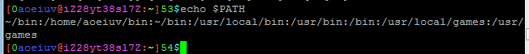
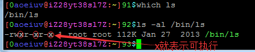
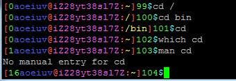
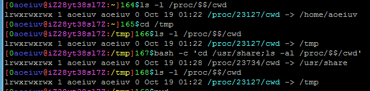
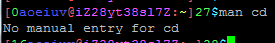
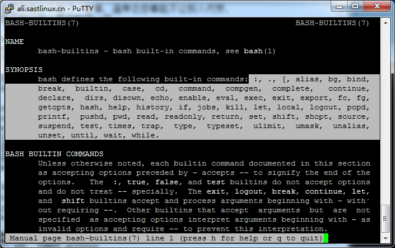
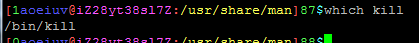
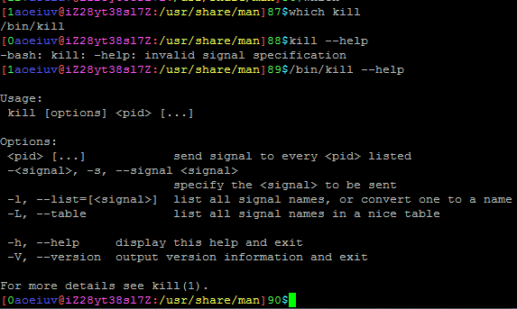
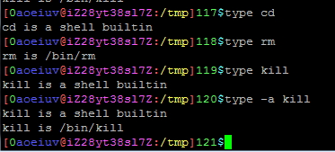

内部命令和外部命令
先说个变量，PATH，里面存了一个个的路径，用分号:隔开，这里的路径，是Shell搜索程序的路径，也就是你输入一个命令，Shell会按顺序在这些路径里搜索同名的可执行文件，如果存在，就会执行。

反过来，通过which命令可以看到命令的可执行文件所在的目录。

但是，很容易发现，有的命令找不到相应的可执行文件，甚至手册man也找不到这个命令，比如cd。

这些命令，就被称为Shell的“内部命令”一些同义词，“内建命令”，“内建指令”，这些命令输入后，Shell并不是找相应的程序执行，而是自己根据命令做了一些事，通常这些事能不让别人代劳，就好像不能让别人帮你吃饭一样。
对于cd具体说明一下，首先cd的作用是改变工作目录(当前目录)，但是系统里每个进程的工作目录是独立的，可以不同的，如果有一个程序作用是改变工作目录，就算你执行了这个程序，改变的也是那个新进程的工作目录，与Shell自己无关。

那么cd到底做了什么，学过c语言的话应该比较好理解，Linux上那些程序可以说都是c语言实现的，改变当前工作目录也只是一个由Linux提供的c语言函数chdir就可以实现，也就是说，对于Shell，如果收到命令cd，就不会去产生新进程，不会去执行其他程序，只调用一个chdir函数就可以了，chdir这类是特殊的函数，叫“系统调用函数”，一般c语言的书上不会有。
关于手册man，这些内部命令直接用man是查不到的。

要查必需查相关SHELL的手册，比如bash的内部命令要查bash-builtins，zsh的要查zshbuiltins，man bash-builtins。

图中六行就是bash的所有内部命令，认真看会觉得，有的命令不像内部命令，比如kill，用来杀掉某个进程，实际上用"which kill"，是可以看到有kill这个程序的。

实际上，确实有kill程序，也确实有kill这个内部命令，这只能说Shell太强大，把不需要自己做的事情也做了，直接输入kill命令，优先调用的是内部命令kill。

上图可以看出，直接调用kill --help和调用/bin/kill --help是不一样的，也就是说直接输入kill调用的并不是/bin/kill，而是内部命令kill，这种判断方式是比较愚蠢的，也是比较直观，但这有个更好的办法，这里介绍一个内部命令，type，用来看命令的类型，在这里就是看内部还是外部命令，如果是外部命令还会看到这个命令执行的二进制文件的路径，还有加上参数-a可以看见这个命令所有情况。

然后可以随便试试些内部命令的功能用法，在上图的手册页面往下滚有所有内部命令的详细说明，部分重要常用的后面会介绍。